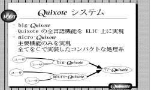

<html>
<head>
<title> Slide No.10 </title>
</head>

<frameset rows="350,*">

<noframes>
<body>
<a href="GIF/slide10.GIF"></a>

<a href="AU/voice10.au">
	</a>[361K]<p>
<!--		-->
私達は、2つの <b> Quixote </b> システムを開発しました。

一つはサーバ、クライアント形式の
<blink> <b> big-Quixote </b> </blink> と
呼ばれているシステムで、<b> KLIC </b> 上で動き、
<b> Quixote </b> の全ての機能を実現する目的で作られました。
そのため大きなシステムとなりました。<p>

もう一つのシステムは、
<blink> <b> micro-Quixote </b> </blink> と呼ばれ、
<b> Quixote </b> の主要機能に限り、全てを <b> C </b> で実装し、
コンパクトなシステムとしました。<p>

<b> big-Quixote </b>、<b> micro-Quixote </b> それぞれ
一長一短あることが分かってきたので、2 つのシステムを
作った経験を生かし、ユーザの意見を取り入れながら、
今後より洗練された第３の<b> ??- Quixote </b> を作りたいと
考えています。<p>
<!--		-->

<hr>
<a href="slide9.html" target="_top">
	前の OHP へ</a><br><br>
<a href="HomePage.html" target="_top">
	OHP の一覧へ</a>
</body>
</noframes>

<frame src="slidebutton10.html">
<frame src="senslide10.html">

</frameset>

</html>